Enchentes
A água invade estações e corta a energia das torres. Famílias ilhadas não conseguem avisar onde estão.
Um pedido de socorro durante uma enchente.
No WebChat do NEXUS, o usuário pode registrar um SOS e acompanhar seu estado. O pedido fica salvo no computador e o recebimento é simulado. Este site apresenta, em separado, a proposta de comunicação por LoRa e satélite.

Torres sem energia, cabos rompidos e redes congestionadas deixam as pessoas isoladas justamente quando mais precisam pedir ajuda. Nas enchentes do Rio Grande do Sul, em 2024, cidades inteiras ficaram sem sinal de celular e internet por dias.
A água invade estações e corta a energia das torres. Famílias ilhadas não conseguem avisar onde estão.
Encostas que cedem derrubam postes e cabos de fibra, isolando bairros inteiros em minutos.
Danos na infraestrutura e milhares de chamadas ao mesmo tempo congestionam o que sobra da rede.
Em áreas rurais e de mata, o sinal já é fraco. Com o fogo, antenas e linhas de energia são destruídas.
No simulador você pode visualizar uma arquitetura futura. Nenhum destes canais transmite um pedido real nesta entrega.
Um dispositivo futuro poderia incluir um botão SOS e um GPS. No WebChat atual, o usuário informa a localização.
A proposta prevê antenas LoRa como primeira opção de comunicação.
A proposta considera satélite como alternativa, se o serviço estiver disponível.
Uma central operacional seria necessária numa fase futura. O recebimento desta entrega é simulado.
Com o WebChat e seu servidor no mesmo computador, registrar um SOS não exige internet.
Após confirmar o relato, o usuário recebe um protocolo e pode consultar o estado do pedido.
LoRa e satélite aparecem como rotas alternativas no simulador visual.
Na arquitetura proposta, antenas poderiam formar uma malha com caminhos alternativos.
O usuário informa onde está. GPS integrado é uma possibilidade futura.
Sem rota, o WebChat mostra o SOS salvo. O recebimento só muda na demonstração depois de testar uma rota simulada.
O simulador visual e o WebChat são demonstrações separadas. Nenhum deles aciona equipes de resgate.
Compare as rotas do simulador ao provocar uma falha de conexão. A central exibida é fictícia.